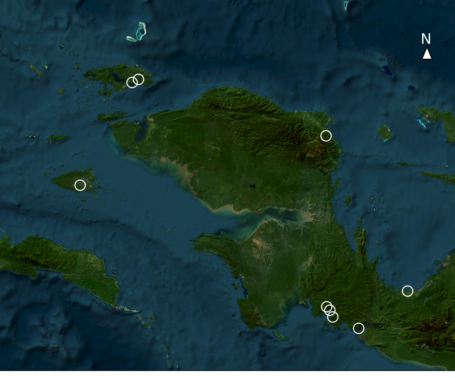

GEOGRAPHICAL AND HISTORICAL SUBDIVISION OF CROWN PIGEONS IN NEW GUINEA AND RAJA AMPAT
By comparing the relatedness of crown pigeon museum specimens, using publically available genomes, with when and where they were collected we describe the genetic subdivision of their populations across space and time.
Read more ↪